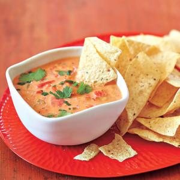
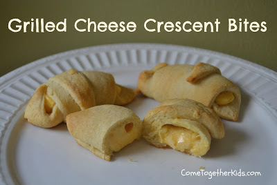
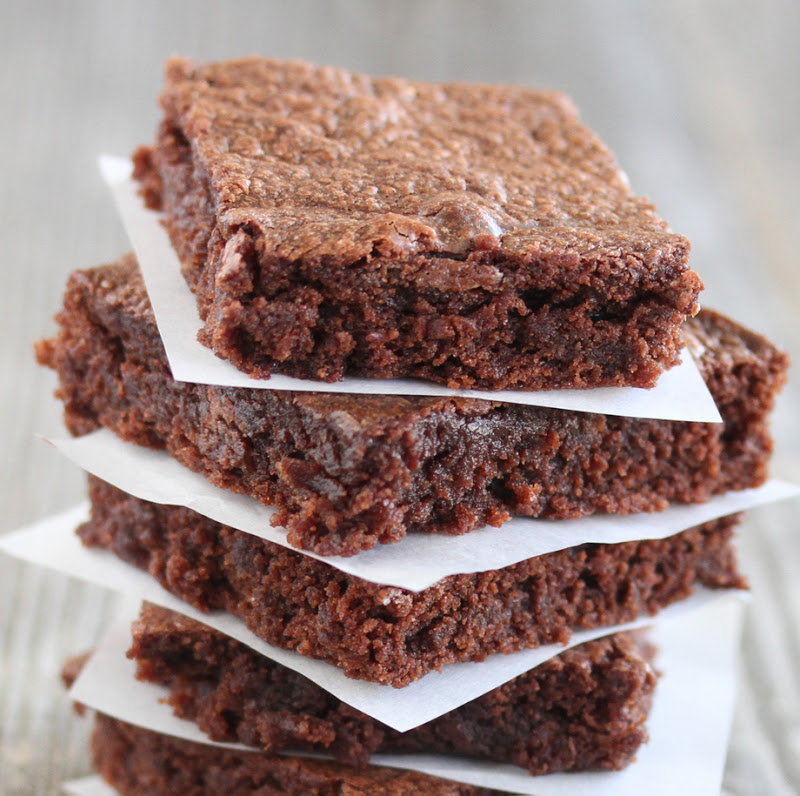
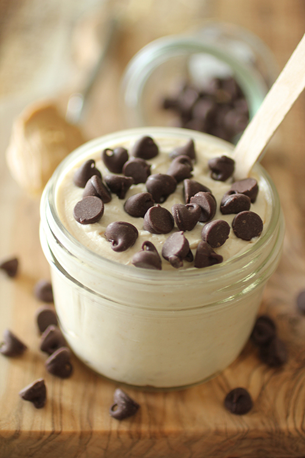
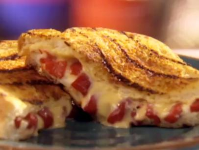
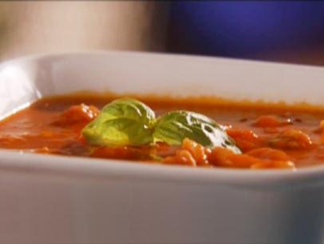

Quick

Hosting a party in your dorm, don't have party money or time? Go for some chips and dip! Mhmm, spicy.

Hungry? Have some cresant bites. Ten minutes tops, grab some breakfast before your 7am class!

Brownies! Do you need more than that? Quick and so close to healthy you can almost taste it!

Want dessert but don't want to feel guilty about it? Avoid the freshman fifteen with this healthy dessert!

Sick of the same old, same old? Can't live off ramen? Here's an old time favorite with a twist!

Tomato soup or shrimp? Tomato soup or shrimp? Hmmmmm.... Both! Have our tasty Lean-O Cioppino!